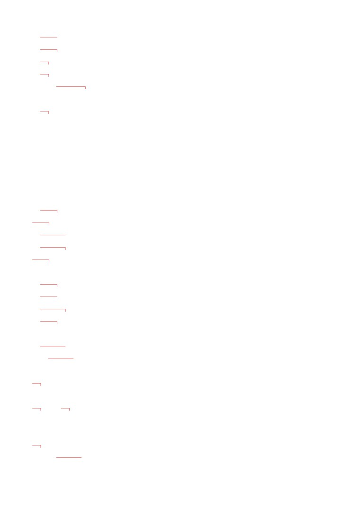
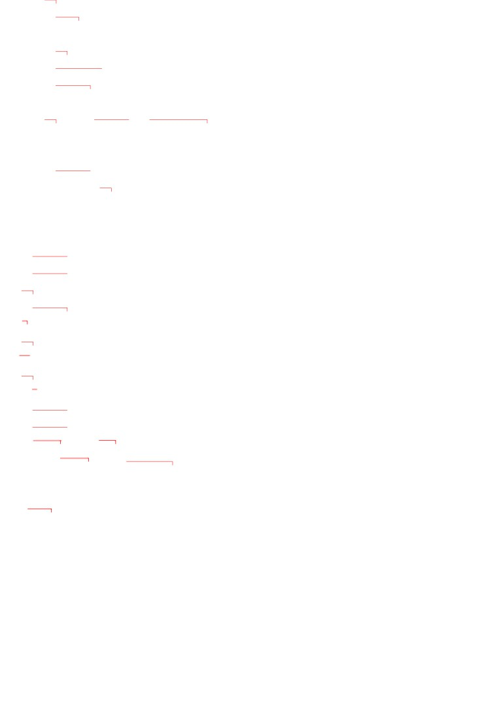
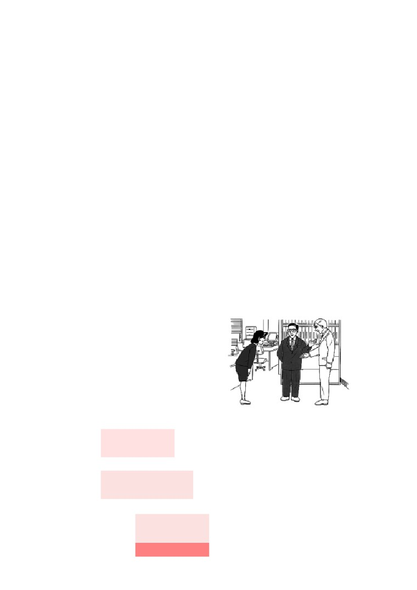
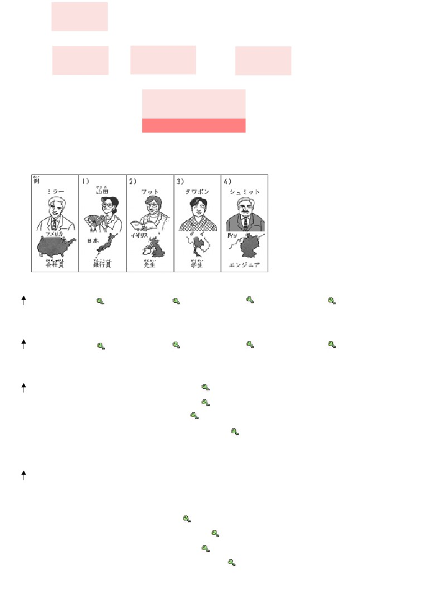
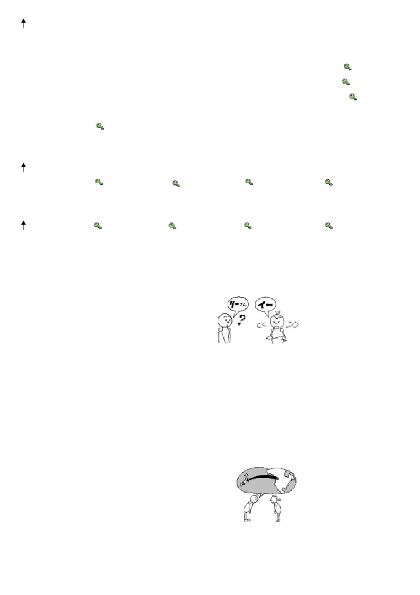
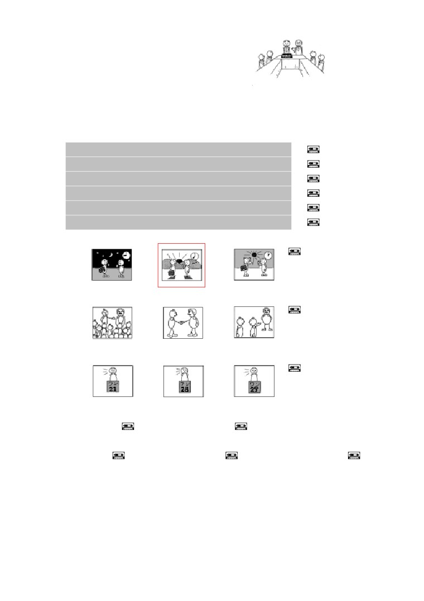
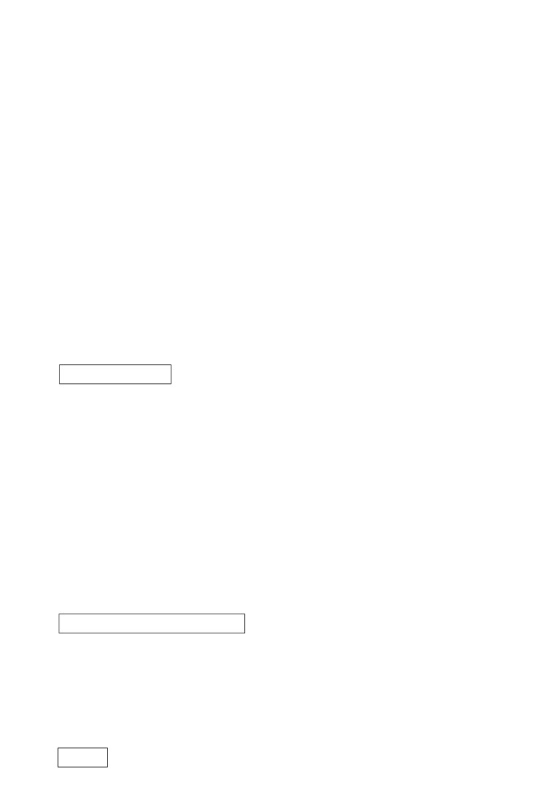
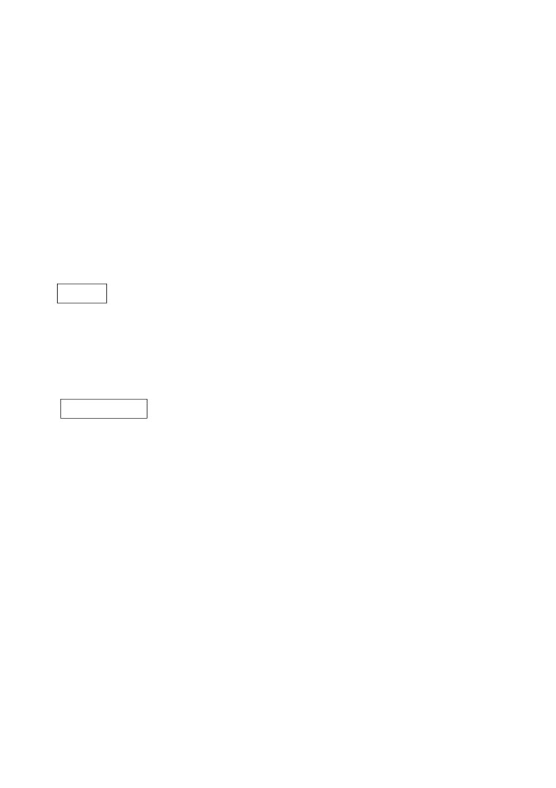

第
１ 課
課:1 (頁:1/8)
ことば
1. わたし
我
2. わたしたち
我們
3. あなた
你，妳
4.
あの ひと
あの 人
他，她，那個人
（ あの かた ）
（ あの 方 ）
（“あのかた”是“あのひと”
的禮
貌形）
5. みなさん
皆さん
各位，大家
6.
～さん
～先生，～小姐，～女士
7.
～ちゃん
（用於小孩的名字後）
8.
～くん
～君
～君（用於男孩的名字後）
9.
～じん
～人
（表國籍，如“アメリカじん”）
10. せんせい
先生
老師，教導者
11. きょうし
教師
教師
12. がくせい
学生
學生
13. かいしゃいん
会社員
公司職員
14. しゃいん
社員
～公司的職員（和公司的名稱一起使
用，如IMCの しゃいん
）
15. ぎんこういん
銀行員
銀行員
16. いしゃ
医者
醫生
17. けんきゅうしゃ
研究者
研究人員
18. エンジニア
工程師
19. だいがく
大学
大學
20. びょういん
病院
醫院
21. でんき
電気
電，電燈
22. だれ （ どなた ）
誰（哪位）（“どなた”是“だれ”
禮貌形）
23.
…さい
…歳
…歲
24.
なんさい
何歳
幾歲
（ おいくつ ）
（“おいくつ”是“なんさい”
的禮
貌形）

課:1 (頁:2/8)
25.
はい
是，對
26. いいえ
不，不是
27. しつれいですが
失礼ですが
冒昧請教一下
28. おなまえは？
お名前は？
您貴姓？
29. はじめまして。
初めまして。
初次見面。（第一次見面時的寒喧）
30.
どうぞ よろしく［おねがいします］。
請多關照。（第一次見面的問候語）
どうぞ よろしく［お願いします］。
31. こちらは
～さんです。
這位是～先生/小姐。
32.
～から きました。
我從～來。
～から 来ました。
---以下單字請自行練習發音---
アメリカ
美國
イギリス
英國
インド
印度
インドネシア
印尼
かん こく
韓国
韓國
タイ
泰國
ちゅうごく
中国
中國
ドイツ
德國
に ほん
日本
日本
フランス
法國
ブラジル
巴西
だい がく
ふ
じ だい がく
さくら大学╱富士大学
櫻花大學/富士大學
でん き
IMC／パワー電気／ブラジルエアー
IMC/動力電器/巴西空調（虛構的
公司名）
AKC
AKC研究所（虛構的研究所名）
こう べ びょういん
神戸病院
神戶醫院（虛構的醫院名）
ぶん けい
文型
1. わたしは マイク・ミラーです。
がく せい
2. サントスさんは 学生じゃ ありません。
（ では ）
かい しゃ いん
ミラーさんは 会社員ですか。
3.
かい しゃ いん
4. サントスさんも 会社員です。
れい ぶん
例文
1.
［あなたは］ マイク・ミラーさんですか。

課:1 (頁:3/8)
…はい、［わたしは］ マイク・ミラーです。
がく せい
2. ミラーさんは 学生ですか。
がく せい
…いいえ、［わたしは］ 学生じゃ ありません。
かい しゃ いん
会社員です。
3. ワンさんは エンジニアですか。
…いいえ、ワンさんは エンジニアじゃ ありません。
い しゃ
医者です。
かた
4. あの 方は どなたですか。
だい がく
せん せい
…ワットさんです。 さくら大学の 先生です。
なん さい
5. テレサちゃんは 何歳ですか。
さい
…9歳です。
かい わ
会話
はじ
初めまして
さ
とう
佐 藤：
おはよう ございます。
やま
だ
山 田：
おはよう ございます。
さ とう
佐藤さん、こちらは マイク・ミラーさんです。
はじ
ミラー： 初めまして。
マイク・ミラーです。
き
アメリカから 来ました。
どうぞ よろしく。
さ
とう
さ とう
こ
佐 藤：
佐藤けい子です。
どうぞ よろしく。
れん しゅう
練習 Ａ
1. わたしは
マイク・ミラー
です。
かいしゃいん
2. わたしは
カール・シュミット
じゃ ありません。
エンジニア
ひと
かた
3. あの 人 （方）は
きむらさん
ですか。
マリアさん
だれ（どなた）
じん
4.
サントスさんは ブラジル人です。

じん
課:1 (頁:4/8)
マリアさん
も ブラジル人です。
あの ひと
5.
ミラーさん
は
IMC
の
しゃいん
です。
カリナさん
ふじだいがく
がくせい
6.
テレサちゃん は
9さい
です。
たろうくん
8さい
なんさい（おいくつ）
……か。
れん しゅう
練習 Ｂ
れい
じん
1. 例：
→ ミラーさんは アメリカ人です。
1)
→
2)
→
3)
→
4)
→
れい
かい しゃ いん
2.
例： → ミラーさんは 会社員です。
1)
→
2)
→
3)
→
4)
→
れい
ぎん こう いん
ぎん こう いん
3.
例： ミラーさん・銀行員 →
ミラーさんは 銀行員じゃ ありません。
やま だ
1)
山田さん・エンジニア →
じん
2)
ワットさん・ドイツ人 →
せん せい
3)
タワポンさん・先生 →
じん
4)
シュミットさん・アメリカ人 →
れい
じん
じん
4.
例： ミラーさん・アメリカ人 →
ミラーさんは アメリカ人ですか。
じん
……はい、アメリカ人です。
れい
い しゃ
い しゃ
例： ミラーさん・医者 →
ミラーさんは 医者ですか。
い しゃ
……いいえ、医者じゃ ありません。
やま だ
ぎん こう いん
1)
山田さん・銀行員 →
じん
2)
ワットさん・フランス人 →
かい しゃ いん
3)
タワポンさん・会社員 →
4)
シュミットさん・エンジニア →

れい
かい しゃ いん
かい しゃ いん
課:1 (頁:5/8)
5.
例： ミラーさんは 会社員です。 グプタさんも 会社員ですか。
かい しゃ いん
→ はい、グプタさんも 会社員です。
れい
じん
じん
例： ミラーさんは アメリカ人です。 グプタさんも アメリカ人ですか。
じん
→ いいえ、グプタさんは アメリカ人じゃ ありません。
やま だ
ぎん こう いん
ぎん こう いん
1)
山田さんは 銀行員です。 イーさんも 銀行員ですか。 →
せん せい
せん せい
2)
ワットさんは 先生です。 ワンさんも 先生ですか。 →
がく せい
がく せい
3)
タワポンさんは 学生です。 カリナさんも 学生ですか。 →
じん
じん
4)
シュミットさんは ドイツ人です。 サントスさんも ドイツ人ですか。
→
れい
かた
6.
例： → あの 方は どなたですか。
しゃ いん
……グプタさんです。 IMCの 社員です。
1)
→
2)
→
3)
→
4)
→
れい
さい
7.
例： → グプタさんは 42歳です。
1)
→
2)
→
3)
→
4)
→
れん しゅう
練習 Ｃ
しつ れい
な まえ
1. Ａ: 失礼ですが、お名前は？
Ｂ: イーです。
Ａ: リーさんですか。
Ｂ: いいえ、イーです。
1)
サントス
サンタス
2)
ワット
アット
3)
タワポン
タナポン
はじ
2. Ａ:
初めまして。 マイク・ミラーです。
き
アメリカから 来ました。 どうぞ よろしく。
さ とう
Ｂ:
佐藤です。 どうぞ よろしく。
1)
ホセ・サントス
ブラジル
2)
カリナ
インドネシア
3)
ワン
ちゅうごく
中国
みな
3. Ａ:
皆さん、こちらは マイク・ミラーさんです。

課:1 (頁:6/8)
Ｂ:
おはよう ございます。 マイク・ミラーです。
しゃ いん
ねが
IMCの 社員です。 どうぞ よろしく お願いします。
1)
ホセ・サントス
しゃ いん
ブラジルエアーの 社員
2)
ジョン・ワット
だい がく
きょう し
さくら大学の 教師
3)
カール・シュミット
でん き
パワー電気の エンジニア
もん だい
問題
れい
せん せい
1.
例： いいえ、［わたしは］ 先生じゃ ありません。
れい
1)
…例：いいえ、わたしは サントスでは ありません。
れい
2)
…例：マイク・ミラーです。
れい
さい
3)
…例：28歳です。
れい
じん
4)
…例：はい、アメリカ人です。
れい
5)
…例：いいえ、エンジニアじゃありません。
れい
2.
例：
①
②
③
1)
①
②
③
2)
①
②
③
れい
れい
3.
例1：（ × ）
例2：（ ○ ）
1)
( ○ )
2)
( × )
3)
( ○ )
れい
がく せい
4.
例： あなたは （ 学生 ）ですか。
がく せい
……はい、学生です。
1)
あなたは （ ミラーさん ） ですか。
……はい、わたしは ミラーです。
じん
2)
ミラーさんは （ アメリカ人 ） ですか。
じん
……はい、アメリカ人です。
じん
3)
ワットさんも （ アメリカ人 ） ですか。
じん
じん
……いいえ、アメリカ人じゃ あリません。 イギリス人です。

かた
課:1 (頁:7/8)
あの 方は （ どなた（ だれ ） ）ですか。
4)
……サントスさんです。
なん さい
5)
テレサちゃんは （ 何歳（ おいくつ ） ） ですか。
さい
……9歳です。
れい
例： わたし （ は ） ミラーです。
5.
い しゃ
1)
ワンさん （ は ） 医者です。
せん せい
2)
カリナさん （ は ） 先生です（ か ）。
せん せい
……いいえ、先生じゃ ありません。
しゃ いん
3)
ミラーさんは IMC（ の ） 社員です。
かい しゃ いん
4)
ミラーさんは 会社員です。
かい しゃ いん
サントスさん （ も ） 会社員です。
はじ
6. 初めまして。
わたしは （ マイク・ミラー ）です。
き
（ アメリカ ） から 来ました。
どうぞ よろしく。
文法
１.
名詞 1 は 名詞 2 です
1)
助詞「は」
助詞「は」表示之前的名詞是句子的主題。說話人用「は」來提示想說的主題，
再加上各種敘述構成句子。
① わたしは マイク・ミラーです。
我是邁克米勒。
〔註〕助詞的「は」要唸成「わ」。
2) です
名詞加上「です」構成述語。
「です」表示判斷、斷定的意思。
「です
」表示 說話人對聽話人的禮貌態度。
「です 」在否定句（參考２.）和過去時態（參考第12課）時，形態會產生變化。
② わたしは エンジニアです。
我是工程師。
２.
名詞 1 は 名詞 2 じゃ ありません
「じゃ ありません 」是「です
」的否定形。這是日常會話中使用的形式，在
正式的演講和書面語中用「では ありません
」。
がく せい
③ サントスさんは 学生じゃ ありません。
山多斯先生不是學生。
（では）
〔註〕「では 」的「は」要唸成「わ」。
３.
句子 か

課:1 (頁:8/8)
1)
助詞「か
」
助詞「か
」表示說話人不確定的情緒或帶有疑問的情緒。「か
」附在句尾構成
疑問句。疑問句的句尾音調一般會上揚。
2) 根據句子內容回答「はい 」或「いいえ 」的疑問句
在敘述句句尾加上助詞「か
」構成，句子的語序不變。這種疑問句是詢問敘述
的內容是否正確。敘述的內容正確時回答「はい
」，錯誤時回答「いいえ
」。
じん
④ ミラーさんは アメリカ 人ですか。
米勒先生是美國人嗎？
じん
…
はい、アメリカ 人です。
…是的，美國人。
せん せい
⑤ ミラーさんは 先生ですか。
米勒先生是老師嗎？
せん せい
… いいえ、 先生じゃ ありません。
…不，不是老師。
3) 帶疑問詞的疑問句
用疑問詞取代想要詢問的內容。句子的語序不變。句尾加「か
」。
かた
⑥ あの 方は どなたですか。
那位是誰？
かた
…〔 あの 方は 〕 ミラーさんです。
…〔那位是〕米勒先生。
４.
名詞 も
關於成為主題的名詞的敘述，與之前關於其他主題的敘述相同時，用「も
」取
代「は
」。
かい しゃ いん
⑦ ミラーさんは 会社員です。
米勒先生是公司職員。
かい しゃ いん
グプタさんも 会社員です。
古普達先生也是公司職員。
５.
名詞 1 の 名詞2
當前面的名詞修飾限定後面的名詞時，用「の
」連接兩個名詞。在第一課中，
「名詞1 」表示「名詞2 」的公司。
しゃ いん
⑧ ミラーさんは IMCの 社員です。
米勒先生是 IMC公司的職員。
６.
～ さん
日語會在聽話人或第三者的姓氏後加上「さん 」。「さん 」是表達敬意的，所以
不能加在說話者自己的姓氏後。
かた
⑨ あの 方は ミラーさんです。
那位是米勒先生。
如果知道聽話人的姓名，提到他時一般不說「あなた
」，而是在姓氏後加上「さ
ん」。
すず
き
がく せい
⑩ 鈴 木：ミラーさんは 学生ですか。
鈴木：米勒先生你是學生嗎？
かい しゃ いん
ミラー：いいえ、 会社員です。
米勒：不，我是公司職員。